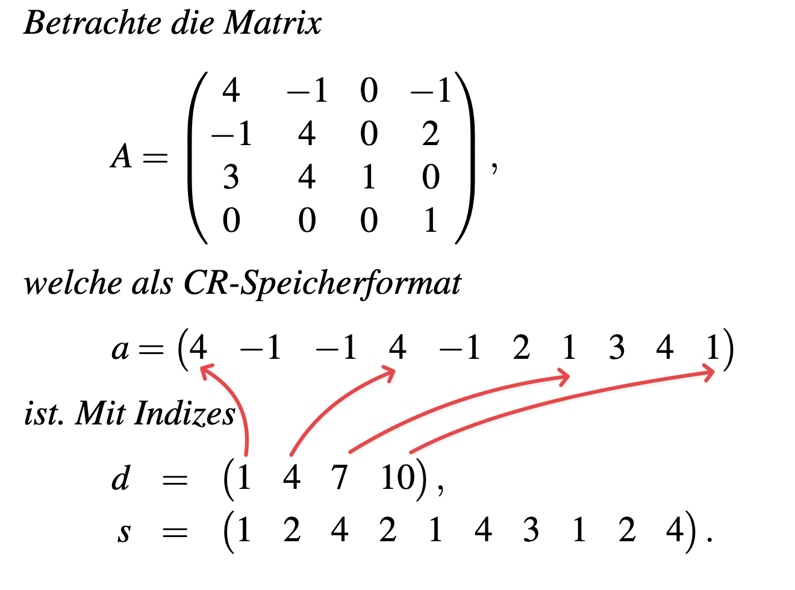
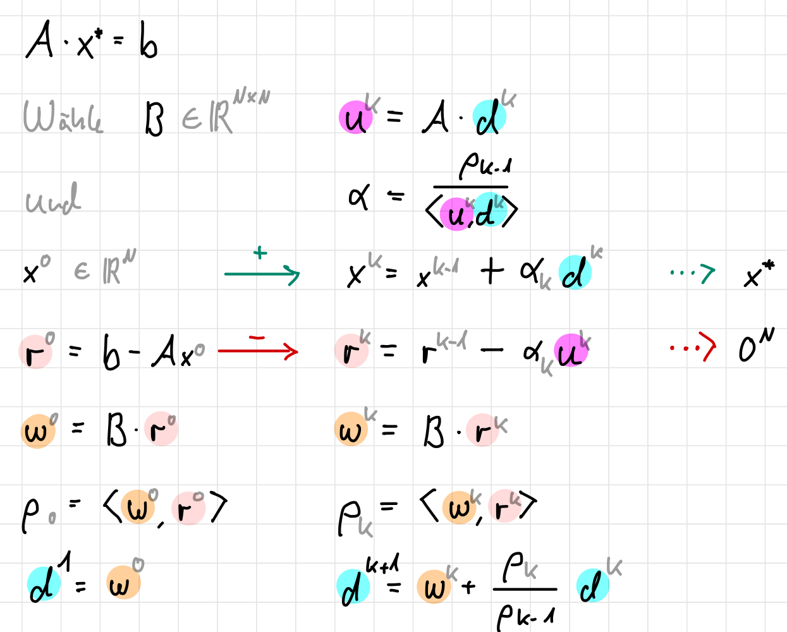

5 Iterationsverfahren für lineare Gleichungssysteme
🏁 Ziel: Approximierung eines LGS \(Ax = b\) mittels einer iterativen Methode und einer Genauigkeit \(\varepsilon\)
⚠️ Problem: \(A\) ggf. schlecht konditioniert
💡 Idee: Löse \(BAx=Bb\) mit \(B\) invertierbar und \(BA\) kleinere Kondition als \(A\)
5.1 Allgemeine lineare Iteration
Sei \(B \in \mathbb{R}^{N \times N}\) ein Vorkonditionierer.
Somit erhalten wir für \(x\) eine Fixpunktaufgabe:
\[ x = (I - BA)x + Bb = x + B(b - Ax) \]
Zur Bestimmung von \(B\) zerlegen wir
\[ A = L + D + R \]
mit der strikt unteren Dreiecksmatrix \(L=\text{lower}(A)\), der Diagonalmatrix \(D=\text{diag}(A)\) und der strikt oberen Dreiecksmatrix \(R=\text{upper}(A)\). Damit erhalten wir die folgenden Verfahren:
- \(B = D^{-1}\) Jacobi,
- \(B = (L+D)^{-1}\) Gauß-Seidel,
- \(B = R^{-1}L^{-1}\) mit \(A \approx LR\) unvollständige LR-Zerlegung,
- \(B = \sum_{j=1}^J E_j A_j^{-1} E_j^{\top}\) (“Subspace-Correction”) mit:
Sei \(\{1, \dots, N\} = I_1 \cup \dots \cup I_J\) eine (überlappende) Zerlegung mit \(I_j = \{n_{j,1}, \dots, n_{j,N_j}\}\). Definiere \(A_j[i,k] = A[n_{j,i}, n_{j,k}]\), d.h. \(A_j \in \mathbb{R}^{N_j \times N_j}\) und \(E_j \in \mathbb{R}^{N_j \times N}\) mit \(E_j[i, n_{j,i}] = 1\) ansonsten 0. - BPX, FETI, FETI-DP, überlappendes Schwarz-Verfahren, Mehrgitter-Verfahren, ….
Algorithmus
- Wähle \(x^0 \in \mathbb{R}^N\) und \(\varepsilon > 0\).
Setze \(k := 0\) und \(r^0 := b - Ax^0\). - Falls \(|r^k| < \varepsilon\): STOP.
- Berechne:
\[\begin{align*} c^k &= Br^k, \\ x^{k+1} &= x^k + c^k, \\ r^{k+1} &= r^k - Ac^k. \end{align*}\]
Setze \(k := k + 1\) und gehe zu 1..
Bemerkungen
Es gilt
\[\begin{align*} r^{k+1} &= (b-Ax^k) - Ac^k \\ &= b-A(x^k+c^k) \\ &= b-Ax^{k+1} \end{align*}\]Sei \(Ax = b\). Dann ist
\(|r^k| = |b-Ax^k| = |Ax-Ax^k| \leq \|A\|\|x-x^k\|\).
Also folgt aus S1):
\(|r^k| < \varepsilon\), so dass \(|x-x^k| = |A^{-1}r^k| < \|A^{-1}\| \|r^k\| < \|A^{-1}\| \varepsilon\).
Daher muss \(\varepsilon\) immer problemabhängig gewählt werden!Für den Fehler \(e^k = x-x^k\) gilt: \[\begin{align*} e^{k+1} &= x-x^{k+1} \\ &= x-x^k - Br^k \\ &= x-x^k - B(b-Ax^k) \\ &= x-x^k - B(Ax-Ax^k) \\ &= (I_N - BA)(x-x^k). \end{align*}\] Hierbei handelt es sich um lineare Konvergenz, falls \(\|I_N - BA\| < 1\), da \(|x-x^k| \leq \|I_N - BA\|^k \|x-x^0\|\).
Seien \(A, B \in \mathbb{R}^{N \times N}\) mit \(\rho(I - BA) < 1\). Dann ist \(A\) invertierbar und für alle \(x^0 \in \mathbb{R}^N\) konvergiert die Iteration \[ x^{k+1} = x^k + B(b - Ax^k) \quad k = 0, 1, 2, \dots \] linear, so dass gilt \[ \lim_{k \to \infty} x^k = A^{-1}b. \]
Denn: Dann existiert eine Norm mit \(||I_N - BA|| < 1\) und \[\begin{align*} A^{-1} &= (BA)^{-1}B \\ &= (I_N - I_N + BA)^{-1}B \\ &= \sum_{k=0}^{\infty} (I_N - BA)^k B \quad \text{(Neumann-Reihe)}. \end{align*}\]
5.2 CR-Speicherformat
(en. Compressed Row Storage CRS)
Im Folgenden schauen wir uns Verfahren für dünn besetzte Matrizen an. Hierfür definieren wir folgendes Speicherformat:
Sei \(A \in \mathbb{R}^{N \times N}\) dünn besetzt. Speichere alle von null verschiedenen Einträge von \(A\) in einem Vektor \(a \in \mathbb{R}^M\). Speichere die zugehörigen Spaltenindizes in einem Vektor \(s \in \mathbb{N}^M\). Nun müssen wir wissen, wo die nächsten Zeilen in \(a\) anfangen. Speichere dafür für jede Zeile \(i\) in einem Vektor \(d \in \mathbb{N}^{O}\), sodass \(d_i = \text{Anfangsindex der Zeile } i \text{ in } a\) und dementsprechend \(d_{i+1} = \text{Beginn der nächsten Zeile } i+1\) in \(a\).

5.3 Krylovraum–Verfahren
5.4 CG-Verfahren
Ist unsere Matrix \(A\) symmetrisch und positiv definit, so können wir das CG-Verfahren verwenden. Dieses ist ein iteratives Verfahren, welches die Lösung des LGS \(Ax = b\) approximiert.
